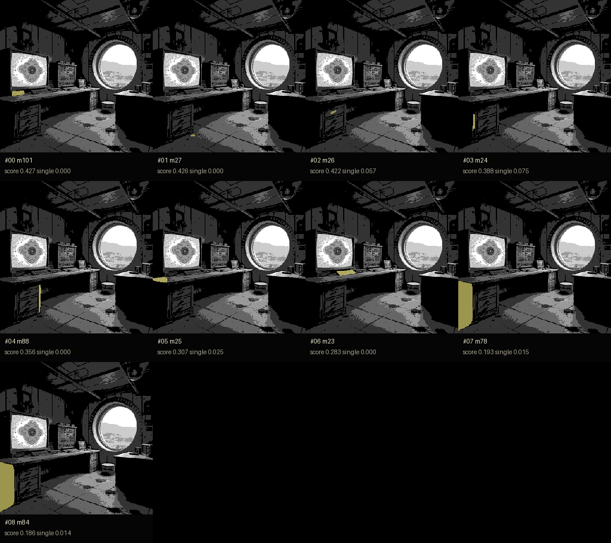
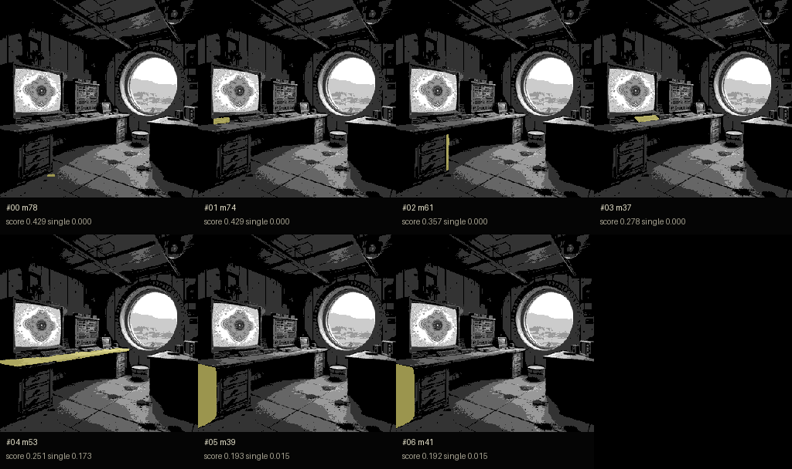
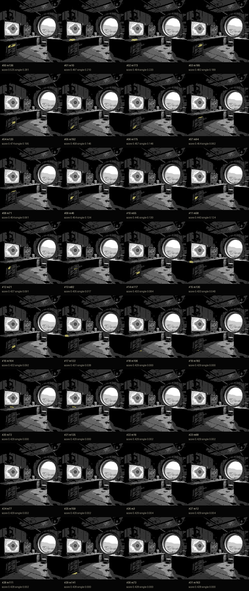

SAM2 Automatic Proposal Audition / drawers
Goal: test whether whole-image proposal segmentation can expose a single drawer-level mask in the pixel scene.
Result: ROI 4x is the only route that starts to find drawer-like subparts. Full-image 1x/2x mostly returns desk edges, cabinet sides, and small texture fragments.

Weak baseline. It finds some cabinet edges, not a usable single drawer.

Still weak. Upscaling the entire image increases texture competition instead of isolating drawer panels.

Best current route. Some candidates approach drawer subparts, but the masks are still not asset-grade.